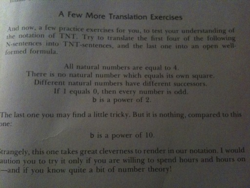

TNT does not, as one not currently reading Douglas R. Hofstadter's Gödel, Escher, Bach might assume, refer to the highly explosive substance trinitrotoluene. In this case, TNT stands for Typographical Number Theory, a formal system created by Hofstadter in order to illustrate many different concepts to his readers.
Not having had any previous knowledge of number theory nor of formal systems, I am most definitely a novice when it comes to the type of mathematical problems found in the book. So far, however, I have been able to solve each of the presented puzzles, albeit with some difficulty. The one which I have just come across has the most difficult thus far, and after solving it I found myself compelled to share my success with the rest of the world.

In chapter VIII, entitled Typographical Number Theory, Hofstadter presents a few statements (above), asking the reader to translate them into his simple (yet somewhat difficult to understand) system of variables and logic, TNT. He also teases with an "almost impossible" puzzle, "b is a power of 10", saying even the most experienced of mathematicians would need hours and hours to figure it out. The first four were easy, and my solutions to them are as follows.
Number five, the subject and this post and the cause of all my troubles during the last hour or so, was not quite so easy. I expect for that anyone with any previous experience with similar systems it would not have presented such a challenge, but for such an inexperienced person as myself it was quite difficult indeed.
First, I tried prying it apart mathematically, rewriting it ways like b = 2n or b = 21 × 22 × 23 ... × 2n, etc. This didn't help me at all, because my math skills aren't that strong and there was nowhere I could take it from there. So I looked at its possible English translations next.
It seemed to me that there were a few simple things that can be done in TNT with relative ease, but as you move up the line of complexity it becomes exponentially harder to express something in such a simple language. I knew for sure I could express a few basic things in TNT, such as "a is a factor of b" or "if something then something else".
I eventually figured that if all factors of b are multiples of two then b is most certainly a power of two. This is because this power's only prime factor would be two, with a multiplicity of the given exponent. Think about it, its powers will have no other factors than itself and other powers of 2. You can only divide 32 by 16, 8, 4, and 2. Hence, the stubborn statement can be written in English as "all factors of b are multiples of 2". In TNT, that would be the following.
Edit: Because this confused people, I'd like to clear a few things up. Basically, all this says is the following. For all a, if a is a factor of b then it is also a multiple of 2. If this statement is true for each and every single value of a, then b is a power of two. If there are any exceptions, such as b = 12 and a = 3, then b is not a power of 2. If there is one true case, such as b = 12 and a = 4, then it does not necessarily mean that b is a power of 2.
Edit #2: The difference is that every case of a is necessary for b to be a power of 2, but not sufficient. The overall statement, however, with the "for all a" included, is both necessary AND sufficient.
And there we go. I'm not quite sure whether this is too dissimilar to be considered a translation, but I do believe that the set of all powers of two is equal to the set of numbers for which this TNT statement comes out true. At first I thought the exact same technique would work for powers of 10 just as well. But how could it be that easy? Of course, it wasn't. I was actually quite bewildered, until I realized my error.
Obviously, this translation is only valid when b is a power of a prime number. If it is a power of a composite number, like 10 in the final challenge, then it will have many factors that do not comply with the above theorem of TNT. For example, 100 has factors 2, 5, 20, and 50 (as well as 10), where both 2 and 5 are not divisible by 10. On the other hand, 32 is only divisible by 16, 8, 4, and 2; all divisible by 2.
Please let me know if I'm an idiot and this is totally wrong. Thanks! Anyways, back to being totally bewildered and awed by GEB and its amazingness.